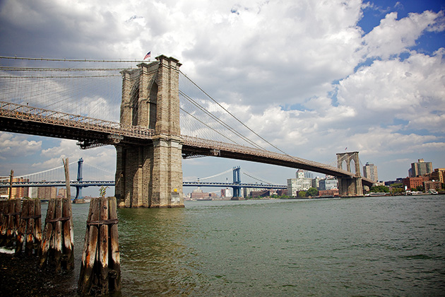

The Brooklyn Bridge is a hybrid cable-stayed/suspension bridge in New York City and is one of the oldest roadway bridges in the United States. Started in 1869 and completed fourteen years later in 1883, it connects the boroughs of Manhattan and Brooklyn, spanning the East River. It has a main span of 1,595.5 feet (486.3 m) and was the first steel-wire suspension bridge constructed. It was originally called the New York and Brooklyn Bridge and the East River Bridge, but it was later dubbed the Brooklyn Bridge, a name coming from an earlier January 25, 1867, letter to the editor of the Brooklyn Daily Eagle and formally so named by the city government in 1915. Since opening, it has become an icon of New York City and was designated a National Historic Landmark in 1964 and a National Historic Civil Engineering Landmark in 1972.
Construction of the Brooklyn Bridge began in 1869. The bridge was conceived by German immigrant John Augustus Roebling, who had previously designed and constructed shorter suspension bridges, such as Roebling's Delaware Aqueduct in Lackawaxen, Pennsylvania, and the John A. Roebling Suspension Bridge between Cincinnati, Ohio, and Covington, Kentucky. While conducting surveys for the bridge project, Roebling sustained a crush injury to his foot when a ferry pinned it against a piling. After amputation of his crushed toes, he developed a tetanus infection which left him incapacitated and soon resulted in his death in 1869, not long after he had placed his 32-year-old son Washington Roebling in charge of the project.
The bridge's two towers were built by floating two caissons, giant upside-down boxes made of southern yellow pine, in the span of the East River, and then beginning to build the stone towers on top of them until they sank to the bottom of the river. Compressed air was pumped into the caissons, and workers entered the space to dig the sediment, until the caissons sank to the bedrock. The whole weight of the bridge still sits upon a 15-foot thickness of southern yellow pine wood under the sediment.
Many workers became sick with the bends during this work. This condition was unknown at the time and was first called "caisson disease" by the project physician Andrew Smith. Washington Roebling suffered a paralyzing injury as a result of "caisson disease" shortly after ground was broken for the Brooklyn tower foundation on January 3, 1870. Roebling's debilitating condition left him unable to physically supervise the construction firsthand.
As Chief Engineer, Roebling supervised the entire project from his apartment with a view of the work, designing and redesigning caissons and other equipment. He was aided by his wife Emily Warren Roebling, who provided the critical written link between her husband and the engineers on site. Under her husband's guidance, Emily studied higher mathematics, the calculations of catenary curves, the strengths of materials, bridge specifications, and the intricacies of cable construction. She spent the next 11 years assisting Washington Roebling, helping to supervise the bridge's construction.
When iron probes underneath the caisson for the Manhattan tower found the bedrock to be even deeper than expected, Roebling halted construction due to the increased risk of decompression sickness. He later deemed the sandy subsoil overlying the bedrock 30 feet (9.1 m) below it to be firm enough to support the tower base, and construction continued.
The construction of the Brooklyn Bridge is detailed in the 1972 book The Great Bridge by David McCullough and Brooklyn Bridge (1981), the first PBS documentary film by Ken Burns. Burns drew heavily on McCullough's book for the film and used him as narrator. It is also described in Seven Wonders of the Industrial World, a BBC docudrama series with an accompanying book.
After the 2007 collapse of the I-35W highway bridge in Minneapolis, public attention has focused on the condition of bridges across the U.S. The New York Times reported that the Brooklyn Bridge approach ramps received a rating of "poor" during its inspection in 2007. According to a NYC Department of Transportation spokesman, the poor rating did not indicate a dangerous state but rather implied it required renovation. A US$508 million project (equivalent to US$570 million in 2017) to renovate the approaches began in 2010, with the full bridge renovation beginning in spring 2011 which was originally scheduled to run until 2014, however the project did not finish until April 2015.
Work included widening two approach ramps from one to two lanes by re-striping a new prefabricated ramp; raising clearance over the eastbound Interstate 278 at York Street, on the double-deck Brooklyn-Queens Expressway; seismic retrofitting; replacement of rusted railings and safety barriers; and road deck resurfacing. The nature of the work necessitated detours for four years.
In August 2016, after the renovation of the bridge had already been completed, the New York City Department of Transportation announced that it would conduct a seven-month, US$370,000 study to verify if the bridge could support a heavier upper deck that consisted of an expanded bicycle and pedestrian path. As of 2016, about 10,000 pedestrians and 3,500 bikers use the pathway on an average weekday. Work on the pedestrian entrance on the Brooklyn side was underway by 2017.
In 1915, the city government officially named the structure the Brooklyn Bridge, a name first mentioned in print in a January 1867 letter to the editor of the Brooklyn Daily Eagle.
The centennial celebrations on May 24, 1983, saw a cavalcade of cars crossing the bridge, led by President Ronald Reagan. A flotilla of ships visited the harbor, parades were held, and in the evening the sky over the bridge was illuminated by Grucci Fireworks. The Brooklyn Museum exhibited a selection of the original drawings made for the bridge's construction, some by Washington Roebling. Media coverage of the centennial was declared "the public relations triumph of 1983" by Inc.
In June 1993, following 13 reconnoiters inside the metal structure, and with the help of a mountain guide, Thierry Devaux performed (illegally) eight acrobatic bungee jumps above the East River close to the Brooklyn-side pier, in the early morning. He used an electric winch between each acrobatic figure.
On March 1, 1994, Lebanese-born Rashid Baz opened fire on a van carrying members of the Chabad-Lubavitch Orthodox Jewish Movement, striking 16-year-old student Ari Halberstam and three others traveling on the bridge. Halberstam died five days later from his wounds. Baz was apparently acting out of revenge for the Hebron massacre of 29 Palestinian Muslims by Baruch Goldstein that had taken place a few days earlier on February 25, 1994. Baz was convicted of murder and sentenced to a 141-year prison term. After initially classifying the murder as one committed out of road rage, the Justice Department reclassified the case in 2000 as a terrorist attack. The entrance ramp to the bridge on the Manhattan side was named the Ari Halberstam Memorial Ramp in memory of the victim.
Beginning on May 22, 2008, five days of festivities celebrated the 125th anniversary of the bridge's opening. The events kicked off with a live performance of the Brooklyn Philharmonic in Empire–Fulton Ferry State Park, followed by special lighting of the bridge's towers and a fireworks display. Other events held during the 125th anniversary celebrations, which coincided with the Memorial Day weekend, included a film series, historical walking tours, information tents, a series of lectures and readings, a bicycle tour of Brooklyn, a miniature golf course featuring Brooklyn icons, and other musical and dance performances. Just before the anniversary celebrations, artist Paul St George installed the Telectroscope, a video link between New York and London, on the Brooklyn side of the bridge. The installation lasted for a few weeks and permitted viewers in New York to see people looking into a matching telectroscope near London's Tower Bridge. A newly renovated pedestrian connection to the DUMBO neighborhood was also unveiled before the anniversary celebrations.
Early in the morning on July 22, 2014, the two American flags attached to poles atop each tower were found to have been replaced by American flags that had been bleached white. It is believed that several individuals covered the lights that illuminate the flags, then climbed the cables to the top of the two bridge towers. Authorities reviewed evidence including surveillance footage and DNA taken from the bridge, and by August 1, 2014, they found up to nine "persons of interest" with a possible motive being cannabis activism. However, on August 12, 2014, two Berlin artists claimed responsibility for hoisting the two white flags, causing the security panic and investigation by New York police. Mischa Leinkauf and Matthias Wermke said the flags were meant to celebrate "the beauty of public space" and the anniversary of the death of German-born John Roebling, who designed the bridge. The artists say they hand-sewed the two flags into all-white replicas of an American flag and had the original flags ready to return. "This was not an anti-American statement," Wermke said.
There have been several notable jumpers as well. The first person to jump from the bridge was Robert Emmet Odlum, brother of women's rights activist Charlotte Odlum Smith, on May 19, 1885. He struck the water at an angle and died shortly thereafter from internal injuries. Steve Brodie dropped from underneath the bridge in July 1886, although there is some doubt about this. Larry Donovan made a slightly higher jump from the railing a month later and went on to an international bridge jumping career. Cartoonist Otto Eppers jumped and survived in 1910, and was then tried and acquitted for attempted suicide. A lesser known early jumper was James Duffy of County Cavan, Ireland, who, on April 15, 1895, asked several men to watch him jump from the bridge. Duffy jumped and was not seen again.
Although the Brooklyn Bridge is technically a suspension bridge, it uses a hybrid cable-stayed/suspension bridge design. The towers are built of limestone, granite, and Rosendale cement. The limestone was quarried at the Clark Quarry in Essex County, New York. The granite blocks were quarried and shaped on Vinalhaven Island, Maine, under a contract with the Bodwell Granite Company, and delivered from Maine to New York by schooner.
The bridge was built with numerous passageways and compartments in its anchorages. New York City rented out the large vaults under the bridge's Manhattan anchorage in order to fund the bridge. Opened in 1876, the vaults were used to store wine, as they were always at 60 °F (16 °C). This was called the "Blue Grotto" because of a shrine to the Virgin Mary next to an opening at the entrance. When New York magazine visited one of the cellars in 1978, it discovered on the wall a "fading inscription" reading: "Who loveth not wine, women and song, he remaineth a fool his whole life long."